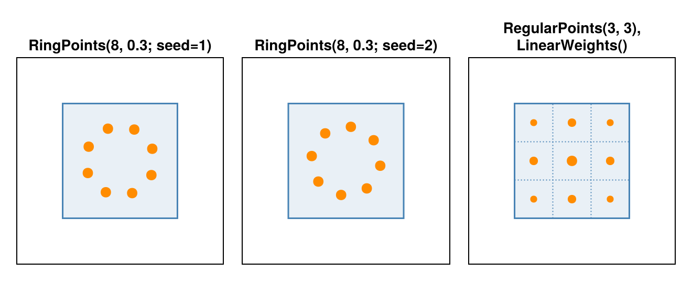

Write a Sampling Strategy
MultiRay places several rays in a detector cell according to a point strategy and weights them with a weighting strategy. Both are ordinary types, and new ones do not have to be part of CTOperators.jl: a script or a package of your own can define them, and they fit in through multiple dispatch. This guide writes one of each, and then lets SamplingProjector from Write a Projector use them. It continues that page: to run this one, run the code there first; image, geometry, SamplingProjector and nearest_voxel come from there.
using CTOperators, KernelAbstractions, LinearAlgebra
using CTOperators: Gather, Scatter, VoxelGrid, clip, to_index, trace_element, visitpoints_figure (generic function with 1 method)A point strategy
A point strategy is a subtype of AbstractPoints{K}, with K the number of rays per cell. It implements CTOperators.point_offset. This function gets the element type T of the projector, the cell (iu, iv), the view (numbered as in the full scan) and the ray k from 1 to K, and returns the offset (du, dv) from the cell center in cell units, where ±1/2 are the cell edges. As an example, K points on a circle around the cell center, rotated by a random angle in every cell:
struct RingPoints{K,T} <: AbstractPoints{K}
radius::T
seed::UInt32
end
RingPoints(K, radius; seed=0) = RingPoints{K,float(typeof(radius))}(radius, UInt32(seed))
@inline function CTOperators.point_offset(p::RingPoints{K}, ::Type{T}, iu, iv, view, k) where {K,T}
turn, _ = CTOperators.random_pair(T, p.seed, iu, iv, view, 1)
s, c = sincos(2 * T(pi) * (turn + T(k) / K))
T(p.radius) * c, T(p.radius) * s
endCTOperators.random_pair gives random numbers that are fixed by the seed, the cell, the view and a number, usually the ray; here always 1, so that all rays of a cell share one rotation. They are the same in the forward and the back projection and on every device; Several Rays per Cell explains why a generator with state does not work here.
point_offset runs inside the kernels, so it must not allocate, and the fields of the type must be plain values, not arrays. Since RingPoints stores a floating-point number, it also says how to convert it, so that it follows the element type of the projector (some GPUs have no Float64):
CTOperators.points_eltype(p::RingPoints{K}, ::Type{T}) where {K,T} = RingPoints{K,T}(p.radius, p.seed)A weighting strategy
A weighting strategy is a subtype of AbstractWeights and implements CTOperators.subray_weight, the weight of a ray at an offset. The kernel divides by the sum of the weights of a cell, which must not be zero. A response that falls off linearly from the cell center:
struct LinearWeights <: AbstractWeights end
CTOperators.subray_weight(::LinearWeights, du, dv) = max(1 - abs(du), 0) * max(1 - abs(dv), 0)Using them
The new types work like those of the package, with every projector that supports MultiRay. In one cell, the blue square, with the marker area relative to the largest weight in the panel: the ring with two seeds, which rotate it, as other cells do; and LinearWeights on regular points, where the corners count less.

g = MultiRay(geometry, RingPoints(8, 0.3; seed=1); weights=LinearWeights())
op = JosephProjector(image, g)
x, y = rand(Float32, imagesize(op)), rand(Float32, datasize(op))
dot(op * x, y) / dot(x, adjoint(op) * y)0.9999996f0A projector with several rays per cell
SamplingProjector asks every ray for its end points with ray, so it has one ray per data element. A MultiRay has no such ray. To work on every geometry, a projector moves the code for one ray into a function and traces through CTOperators.trace_element, which calls it once for a plain geometry and once per ray of the cell for a MultiRay.
The function takes an action, the grid, the two end points and the ray type rt (see raytype). CTOperators.visit does what the two kernels of Write a Projector do: with a CTOperators.Gather it sums the voxels, with a CTOperators.Scatter it adds to them. The option samples travels in a small callable struct with one concrete field, which trace_element passes on:
struct SamplingSegment{T}
samples::T
end
@inline function (s::SamplingSegment)(action, grid::VoxelGrid{T}, a, b, rt) where {T}
p = to_index(grid, a)
d = (b - a) ./ grid.deltas
amin, amax = clip(p, d, grid.dims, rt)
n = amin < amax ? ceil(Int, s.samples * norm(d) * (amax - amin)) : 0
dalpha = n > 0 ? (amax - amin) / n : zero(T)
w = norm(b - a) * dalpha
acc = zero(T)
for j in 1:n
acc = visit(action, acc, nearest_voxel(grid, p + (amin + (j - T(0.5)) * dalpha) * d), w)
end
acc
endThe kernels shrink to one call each:
@kernel function traced_forward!(y, @Const(x), grid, geometry, samples)
i = @index(Global, Linear)
y[i] = trace_element(SamplingSegment(samples), Gather(x), grid, geometry, i)
end
@kernel function traced_backward!(x, @Const(y), grid, geometry, samples)
i = @index(Global, Linear)
trace_element(SamplingSegment(samples), Scatter(x, y[i]), grid, geometry, i)
end
function CTOperators.forward!(y, op::SamplingProjector, x)
traced_forward!(op.backend)(y, vec(x), op.grid, op.geometry, op.samples; ndrange=nrays(op.geometry))
y
end
function CTOperators.backward!(x, op::SamplingProjector, y)
fill!(x, zero(eltype(x)))
traced_backward!(op.backend)(vec(x), y, op.grid, op.geometry, op.samples; ndrange=nrays(op.geometry))
x
endSamplingProjector takes every strategy, also the ones above, and its adjoint stays exact:
op = SamplingProjector(image, MultiRay(geometry, RingPoints(8, 0.3; seed=1); weights=LinearWeights()))
dot(op * x, y) / dot(x, adjoint(op) * y)1.0000002f0On plain geometries it computes the same as the kernels of Write a Projector, up to rounding. For images with one layer of voxels along z, the constructor of a projector keeps the rays in the image plane, as those of the package do:
g = device_geometry(geometry, T, storage)
g = CTOperators.one_layer(image) ? CTOperators.in_plane(g) : gA custom strategy gets offsets along v of 0 there, whatever it returns.
What fits where
| to change | subtype | implement |
|---|---|---|
| where the rays of a cell end | AbstractPoints | CTOperators.point_offset, CTOperators.points_eltype if it stores floats |
| how they are weighted | AbstractWeights | CTOperators.subray_weight, CTOperators.weights_eltype if it stores floats |
| how a ray meets the voxels | AbstractProjector | see Write a Projector, tracing through CTOperators.trace_element |
These functions are declared public: they are not exported, but they are part of the interface.
This page was generated using Literate.jl.